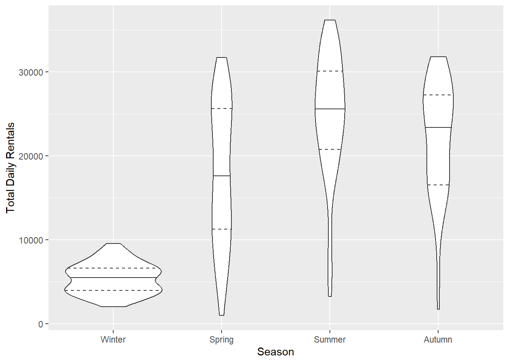
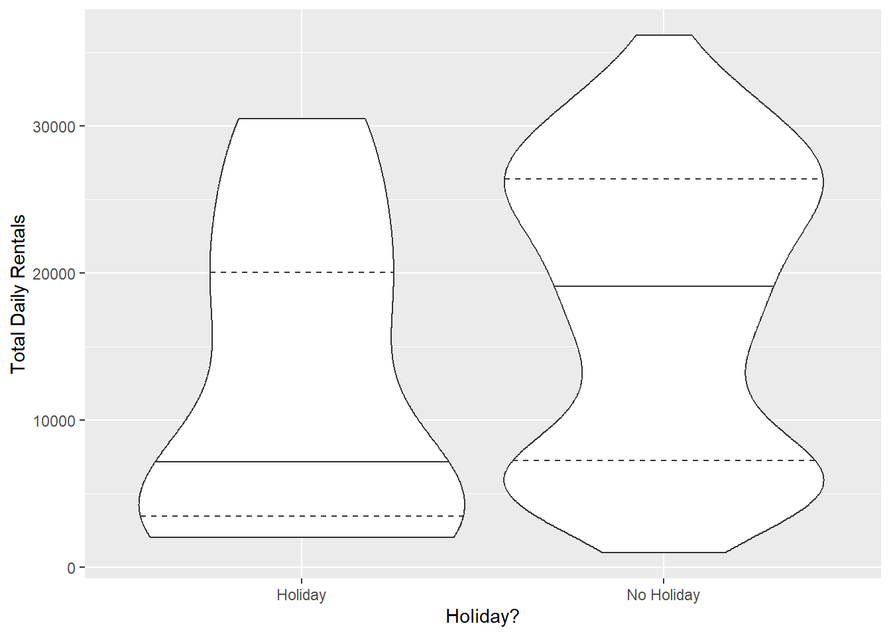
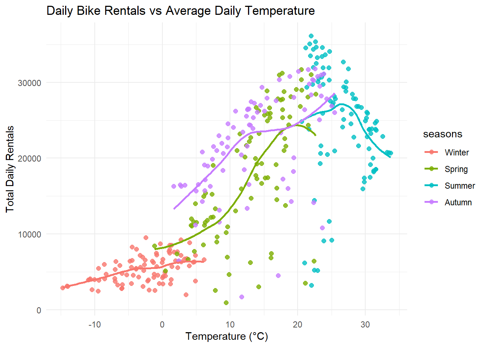
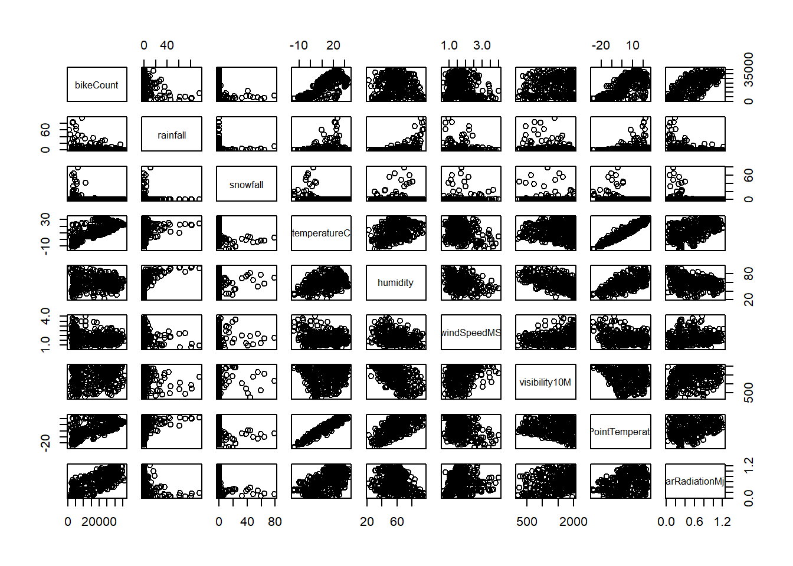
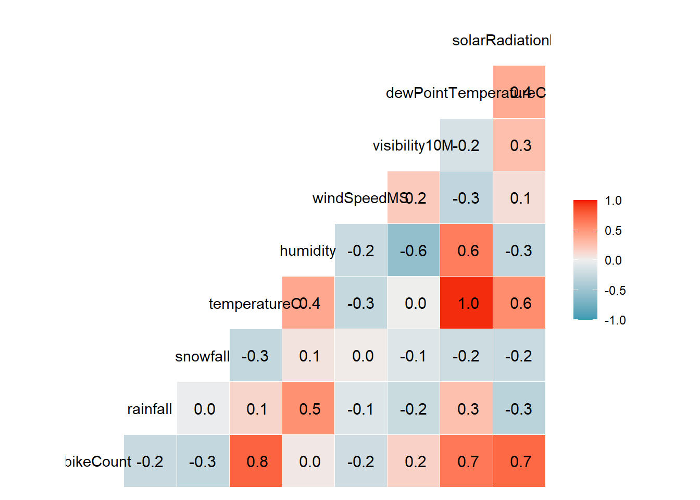

bike_raw <- read_csv(
"https://www4.stat.ncsu.edu/~online/datasets/SeoulBikeData.csv",
locale = locale(encoding = "latin1"),
show_col_types = FALSE
)ST 558 Fall 2026 Group 4 Homework 9
Assignment Information
ST 558
Fall 2026
Homework 9
Group 4
Basic Modeling Practice
To kick things off, we’ll read in a data set from the UCI Machine Learning Repository. Note that some intervention was needed in order to read in the file properly.
Perform a basic EDA
Explore data
First, determine how missing values are coded in the dataset and check for missing values:
colSums(is.na(bike_raw)) Date Rented Bike Count Hour
0 0 0
Temperature(°C) Humidity(%) Wind speed (m/s)
0 0 0
Visibility (10m) Dew point temperature(°C) Solar Radiation (MJ/m2)
0 0 0
Rainfall(mm) Snowfall (cm) Seasons
0 0 0
Holiday Functioning Day
0 0 So far so good; no missing values have been found in any of these variables.
Next, we can check the column types and the values within these columns using the summary function:
summary(bike_raw) Date Rented Bike Count Hour Temperature(°C)
Length :8760 Min. : 0.0 Min. : 0.00 Min. :-17.80
N.unique : 365 1st Qu.: 191.0 1st Qu.: 5.75 1st Qu.: 3.50
N.blank : 0 Median : 504.5 Median :11.50 Median : 13.70
Min.nchar: 10 Mean : 704.6 Mean :11.50 Mean : 12.88
Max.nchar: 10 3rd Qu.:1065.2 3rd Qu.:17.25 3rd Qu.: 22.50
Max. :3556.0 Max. :23.00 Max. : 39.40
Humidity(%) Wind speed (m/s) Visibility (10m) Dew point temperature(°C)
Min. : 0.00 Min. :0.000 Min. : 27 Min. :-30.600
1st Qu.:42.00 1st Qu.:0.900 1st Qu.: 940 1st Qu.: -4.700
Median :57.00 Median :1.500 Median :1698 Median : 5.100
Mean :58.23 Mean :1.725 Mean :1437 Mean : 4.074
3rd Qu.:74.00 3rd Qu.:2.300 3rd Qu.:2000 3rd Qu.: 14.800
Max. :98.00 Max. :7.400 Max. :2000 Max. : 27.200
Solar Radiation (MJ/m2) Rainfall(mm) Snowfall (cm) Seasons
Min. :0.0000 Min. : 0.0000 Min. :0.00000 Length :8760
1st Qu.:0.0000 1st Qu.: 0.0000 1st Qu.:0.00000 N.unique : 4
Median :0.0100 Median : 0.0000 Median :0.00000 N.blank : 0
Mean :0.5691 Mean : 0.1487 Mean :0.07507 Min.nchar: 6
3rd Qu.:0.9300 3rd Qu.: 0.0000 3rd Qu.:0.00000 Max.nchar: 6
Max. :3.5200 Max. :35.0000 Max. :8.80000
Holiday Functioning Day
Length :8760 Length :8760
N.unique : 2 N.unique : 2
N.blank : 0 N.blank : 0
Min.nchar: 7 Min.nchar: 2
Max.nchar: 10 Max.nchar: 3
The column types look correct, although it would probably be useful to change Date and Hour to a time format and some of the character variables to factors. The summary statistics look reasonable.
Clean data
From the lubridate package, we’ll convert the Date variable, which is initally a character-type variable, into an actual date that can be used for our analysis:
bikeClean <- bike_raw |>
mutate(Date = dmy(Date))The remaining character variables (Seasons, Holiday, Functioning Day) will now be turned into categorical variables:
bikeClean <- bikeClean |>
mutate(Seasons = factor(Seasons, levels = c('Winter', 'Spring', 'Summer', 'Autumn')),
Holiday = as.factor(Holiday),
`Functioning Day` = as.factor(`Functioning Day`))Rename the variables as needed to have coding-friendly names:
bikeClean <- bikeClean |>
rename_with(str_to_camel)Produce summary statistics of bike rentals grouped by Functioning Day:
bikeClean |>
group_by(functioningDay) |>
summarise(
count_obs = n(),
mean_rentals = mean(rentedBikeCount),
stddev_rentals = sd(rentedBikeCount),
median_rentals = median(rentedBikeCount),
min_rentals = min(rentedBikeCount),
max_rentals = max(rentedBikeCount)
)# A tibble: 2 × 7
functioningDay count_obs mean_rentals stddev_rentals median_rentals
<fct> <int> <dbl> <dbl> <dbl>
1 No 295 0 0 0
2 Yes 8465 729. 642. 542
# ℹ 2 more variables: min_rentals <dbl>, max_rentals <dbl>From this we see that when “functioning_day” is the factor value of “No”, no bikes were rented. Therefore, we will remove those occurrences from our original results.
But first, let’s check the summary statistics for the other variables:
bikeClean |>
summarize(across(where(is.numeric),
list(minimum = ~min(.x),
median = ~median(.x),
mean = ~mean(.x),
maximum = ~max(.x),
SD = ~sd(.x)),
.names = "{.fn}_{.col}")) |>
pivot_longer(cols = everything(),
names_to = c("variable",".value"),
names_sep = "_")# A tibble: 5 × 11
variable rentedBikeCount hour temperatureC humidity windSpeedMS visibility10M
<chr> <dbl> <dbl> <dbl> <dbl> <dbl> <dbl>
1 minimum 0 0 -17.8 0 0 27
2 median 504. 11.5 13.7 57 1.5 1698
3 mean 705. 11.5 12.9 58.2 1.72 1437.
4 maximum 3556 23 39.4 98 7.4 2000
5 SD 645. 6.92 11.9 20.4 1.04 608.
# ℹ 4 more variables: dewPointTemperatureC <dbl>, solarRadiationMjM2 <dbl>,
# rainfallMm <dbl>, snowfallCm <dbl>Remove observations during non-functioning hours (only keep observations during functioning hours):
bikeFunctional <- bikeClean |>
filter(functioningDay == 'Yes')To simplify the analysis, combine all the hourly observations for each day to make one observation per day:
- Sum the bike_count, rainfall, and snowfall variables
- Calculate the mean of the other weather-related variables
bikeDaily <- bikeFunctional |>
group_by(date, seasons, holiday) |>
summarise(
bikeCount = sum(rentedBikeCount),
rainfall = sum(rainfallMm),
snowfall = sum(snowfallCm),
across(
c(temperatureC, humidity, windSpeedMS, visibility10M, dewPointTemperatureC, solarRadiationMjM2),
mean,
.names = "{.col}"
),
.groups = "drop"
)
bikeDaily# A tibble: 353 × 12
date seasons holiday bikeCount rainfall snowfall temperatureC humidity
<date> <fct> <fct> <dbl> <dbl> <dbl> <dbl> <dbl>
1 2017-12-01 Winter No Holi… 9539 0 0 -2.45 45.9
2 2017-12-02 Winter No Holi… 8523 0 0 1.32 62.0
3 2017-12-03 Winter No Holi… 7222 4 0 4.88 81.5
4 2017-12-04 Winter No Holi… 8729 0.1 0 -0.304 52.5
5 2017-12-05 Winter No Holi… 8307 0 0 -4.46 36.4
6 2017-12-06 Winter No Holi… 6669 1.3 8.6 0.0458 70.8
7 2017-12-07 Winter No Holi… 8549 0 10.4 1.09 67.5
8 2017-12-08 Winter No Holi… 8032 0 0 -3.82 41.8
9 2017-12-09 Winter No Holi… 7233 0 0 -0.846 46
10 2017-12-10 Winter No Holi… 3453 4.1 32.5 1.19 69.7
# ℹ 343 more rows
# ℹ 4 more variables: windSpeedMS <dbl>, visibility10M <dbl>,
# dewPointTemperatureC <dbl>, solarRadiationMjM2 <dbl>Recalculate the basic summary statistics over all variables and for daily bike counts broken down by season and holiday status:
# All variables
summary(bikeDaily) date seasons holiday bikeCount
Min. :2017-12-01 Winter:90 Holiday : 17 Min. : 977
1st Qu.:2018-02-27 Spring:90 No Holiday:336 1st Qu.: 6967
Median :2018-05-28 Summer:92 Median :18563
Mean :2018-05-28 Autumn:81 Mean :17485
3rd Qu.:2018-08-24 3rd Qu.:26285
Max. :2018-11-30 Max. :36149
rainfall snowfall temperatureC humidity
Min. : 0.000 Min. : 0.000 Min. :-14.738 Min. :22.25
1st Qu.: 0.000 1st Qu.: 0.000 1st Qu.: 3.304 1st Qu.:47.58
Median : 0.000 Median : 0.000 Median : 13.738 Median :57.17
Mean : 3.576 Mean : 1.863 Mean : 12.776 Mean :58.17
3rd Qu.: 0.500 3rd Qu.: 0.000 3rd Qu.: 22.592 3rd Qu.:67.71
Max. :95.500 Max. :78.700 Max. : 33.742 Max. :95.88
windSpeedMS visibility10M dewPointTemperatureC solarRadiationMjM2
Min. :0.6625 Min. : 214.3 Min. :-27.750 Min. :0.02917
1st Qu.:1.3042 1st Qu.:1087.0 1st Qu.: -5.188 1st Qu.:0.28333
Median :1.6583 Median :1557.8 Median : 4.612 Median :0.56500
Mean :1.7261 Mean :1434.0 Mean : 3.954 Mean :0.56773
3rd Qu.:1.9542 3rd Qu.:1874.3 3rd Qu.: 14.921 3rd Qu.:0.82000
Max. :4.0000 Max. :2000.0 Max. : 25.038 Max. :1.21667 # Focus on rented bike count
bikeDaily |>
group_by(seasons, holiday) |>
summarise(
n_days = n(),
mean_bikes = mean(bikeCount),
sd_bikes = sd(bikeCount),
median_bikes = median(bikeCount),
IQR_bikes = IQR(bikeCount),
.groups = "drop"
)# A tibble: 8 × 7
seasons holiday n_days mean_bikes sd_bikes median_bikes IQR_bikes
<fct> <fct> <int> <dbl> <dbl> <dbl> <dbl>
1 Winter Holiday 8 3759 1561. 3454. 1060.
2 Winter No Holiday 82 5574. 1757. 5609 2564
3 Spring Holiday 3 15247. 10917. 13790 10844
4 Spring No Holiday 87 18002. 8322. 17730 14224.
5 Summer Holiday 2 24532. 8438. 24532. 5966.
6 Summer No Holiday 90 24824. 7324. 25572. 9165
7 Autumn Holiday 4 22754. 5642. 21705 5740
8 Autumn No Holiday 77 22065. 6792. 23472 10734 Create exploratory plots and calculate correlations
A couple violin plots to focus on the bike count vs categorical variables:
# Seasons
ggplot(bikeDaily, aes(x = seasons, y = bikeCount)) +
geom_violin(quantile.linetype = c(2, 1, 2)) +
labs(
x = "Season",
y = "Total Daily Rentals"
)
# Holiday
ggplot(bikeDaily, aes(x = holiday, y = bikeCount)) +
geom_violin(quantile.linetype = c(2, 1, 2)) +
labs(
x = "Holiday?",
y = "Total Daily Rentals"
)
Bike rentals vs temperature colored by season:
ggplot(bikeDaily, aes(x = temperatureC, y = bikeCount, color = seasons)) +
geom_point(alpha = 0.8, size = 2) +
geom_smooth(method = "loess", se = FALSE) +
theme_minimal() +
labs(
title = "Daily Bike Rentals vs Average Daily Temperature",
x = "Temperature (°C)",
y = "Total Daily Rentals"
)`geom_smooth()` using formula = 'y ~ x'
Daily bike rentals vary substantially by season. Summer has the highest median rental count, followed by autumn and spring, while winter has the lowest. This suggests strong seasonal variation in bike rental demand.
Bike rentals generally increase with temperature, although the relationship appears nonlinear. In summer, rentals tend to decline at higher temperatures, suggesting that extreme heat may reduce demand.
Produce scatterplots (easier to read when output in console rather than inline because there are so many variables):
plot((bikeDaily |> select(where(~ is.numeric(.x)))))
Calculate correlations:
# Numeric Variables
numeric_vars <- bikeDaily |>
select(bikeCount:solarRadiationMjM2)
# Correlation matrix
cor_matrix <- round(cor(numeric_vars), 4)
cor_matrix bikeCount rainfall snowfall temperatureC humidity
bikeCount 1.0000 -0.2391 -0.2653 0.7531 0.0359
rainfall -0.2391 1.0000 -0.0231 0.1445 0.5286
snowfall -0.2653 -0.0231 1.0000 -0.2670 0.0654
temperatureC 0.7531 0.1445 -0.2670 1.0000 0.4042
humidity 0.0359 0.5286 0.0654 0.4042 1.0000
windSpeedMS -0.1929 -0.1017 0.0209 -0.2607 -0.2343
visibility10M 0.1660 -0.2220 -0.1019 0.0023 -0.5592
dewPointTemperatureC 0.6505 0.2646 -0.2096 0.9628 0.6320
solarRadiationMjM2 0.7359 -0.3227 -0.2334 0.5503 -0.2744
windSpeedMS visibility10M dewPointTemperatureC
bikeCount -0.1929 0.1660 0.6505
rainfall -0.1017 -0.2220 0.2646
snowfall 0.0209 -0.1019 -0.2096
temperatureC -0.2607 0.0023 0.9628
humidity -0.2343 -0.5592 0.6320
windSpeedMS 1.0000 0.2060 -0.2877
visibility10M 0.2060 1.0000 -0.1536
dewPointTemperatureC -0.2877 -0.1536 1.0000
solarRadiationMjM2 0.0961 0.2714 0.3832
solarRadiationMjM2
bikeCount 0.7359
rainfall -0.3227
snowfall -0.2334
temperatureC 0.5503
humidity -0.2744
windSpeedMS 0.0961
visibility10M 0.2714
dewPointTemperatureC 0.3832
solarRadiationMjM2 1.0000# Plot version
ggcorr(bikeDaily |> select(where(~ is.numeric(.x))), label = TRUE)
Right off the bat, we see some fairly strong correlation between the rental bike count and temperature, dew point, and radiation. However, there are plenty of places where multicollinearity could exist like the dew point vs. temperature and the dew point vs. humidity. In fact, the highest correlation is within the former pair. These will be demonstrated below.
Modeling Prep
In preparation for fitting models to the data, split the data into training and test sets (75/25 split), stratifying the split on the seasons variable:
set.seed(558)
splitData <- initial_split(data = bikeDaily,
prop = 3/4,
strata = seasons)I haven’t used this function before, so I’ll double check the split of the data:
nrow(training(splitData))[1] 263nrow(testing(splitData))[1] 90Pull out the training and testing datasets from splitData:
bikeTrain <- training(splitData)
bikeTest <- testing(splitData)Prep the data by converting the date variable to a factor with two levels, weekday and weekend:
bikeTrain <- bikeTrain |>
mutate(
dayType = factor(if_else(wday(date) %in% c(1,7),
"Weekend", "Weekday"))
)
bikeTest <- bikeTest |>
mutate(
dayType = factor(if_else(wday(date) %in% c(1,7),
"Weekend", "Weekday"))
)Now, create standardized versions of the numeric variables:
- Subtract training set mean
- Divide by training set standard deviation
bikeTrainZ <- bikeTrain |>
mutate(across(where(is.numeric),
~ (.x - mean(.x))/sd(.x),
.names = "z_{.col}"))
# Also modify the test set variables by standardizing them with the training set mean and standard deviation
bikeTestZ <- bikeTest |>
mutate(across(where(is.numeric),
~ (.x - mean(bikeTrain$.x))/sd(bikeTrain$.x),
.names = "z_{.col}"))Fitting MLR Models
Fit the following models to the testing dataset:
- Main Effects
A model with all the standardized numeric variables included along with the seasons, holiday, and weekend/weekday variables:
model1 <- lm(bikeCount ~ z_rainfall + z_snowfall + z_temperatureC + z_humidity + z_windSpeedMS + z_visibility10M + z_dewPointTemperatureC + z_solarRadiationMjM2 + seasons + holiday + dayType, bikeTrainZ)
summary(model1)
Call:
lm(formula = bikeCount ~ z_rainfall + z_snowfall + z_temperatureC +
z_humidity + z_windSpeedMS + z_visibility10M + z_dewPointTemperatureC +
z_solarRadiationMjM2 + seasons + holiday + dayType, data = bikeTrainZ)
Residuals:
Min 1Q Median 3Q Max
-9779.4 -2532.0 138.8 2381.0 11508.2
Coefficients:
Estimate Std. Error t value Pr(>|t|)
(Intercept) 9870.5 1411.9 6.991 2.50e-11 ***
z_rainfall -1890.1 330.4 -5.720 3.04e-08 ***
z_snowfall -275.2 270.6 -1.017 0.310124
z_temperatureC -7942.3 4666.0 -1.702 0.089977 .
z_humidity -4194.6 1776.6 -2.361 0.019000 *
z_windSpeedMS -681.1 289.4 -2.353 0.019383 *
z_visibility10M -335.6 356.3 -0.942 0.347209
z_dewPointTemperatureC 13750.4 5487.2 2.506 0.012853 *
z_solarRadiationMjM2 4325.2 465.7 9.288 < 2e-16 ***
seasonsSpring 2859.3 1139.5 2.509 0.012732 *
seasonsSummer 4472.8 1640.5 2.727 0.006855 **
seasonsAutumn 8299.1 1073.2 7.733 2.60e-13 ***
holidayNo Holiday 4687.7 1215.9 3.855 0.000147 ***
dayTypeWeekend -2755.1 561.3 -4.908 1.66e-06 ***
---
Signif. codes: 0 '***' 0.001 '**' 0.01 '*' 0.05 '.' 0.1 ' ' 1
Residual standard error: 4025 on 249 degrees of freedom
Multiple R-squared: 0.8435, Adjusted R-squared: 0.8354
F-statistic: 103.3 on 13 and 249 DF, p-value: < 2.2e-16- Interaction Terms
A model with all the terms in the first model but also interactions between seasons and holiday, seasons and temp, and temp and rainfall (all standardized variables used here):
model2 <- lm(bikeCount ~ z_rainfall + z_snowfall + z_temperatureC + z_humidity + z_windSpeedMS + z_visibility10M + z_dewPointTemperatureC + z_solarRadiationMjM2 + seasons + holiday + dayType + seasons:holiday + seasons:z_temperatureC + z_temperatureC:z_rainfall, bikeTrainZ)
summary(model2)
Call:
lm(formula = bikeCount ~ z_rainfall + z_snowfall + z_temperatureC +
z_humidity + z_windSpeedMS + z_visibility10M + z_dewPointTemperatureC +
z_solarRadiationMjM2 + seasons + holiday + dayType + seasons:holiday +
seasons:z_temperatureC + z_temperatureC:z_rainfall, data = bikeTrainZ)
Residuals:
Min 1Q Median 3Q Max
-17842.8 -1585.8 280.7 1702.8 6935.4
Coefficients:
Estimate Std. Error t value Pr(>|t|)
(Intercept) 10455.19 1718.91 6.082 4.59e-09 ***
z_rainfall -2183.68 353.48 -6.178 2.73e-09 ***
z_snowfall -155.80 199.84 -0.780 0.43637
z_temperatureC -6379.18 3563.36 -1.790 0.07467 .
z_humidity -4203.83 1380.83 -3.044 0.00259 **
z_windSpeedMS -454.17 217.01 -2.093 0.03741 *
z_visibility10M 45.25 279.09 0.162 0.87134
z_dewPointTemperatureC 12498.36 4252.85 2.939 0.00361 **
z_solarRadiationMjM2 3466.17 343.91 10.079 < 2e-16 ***
seasonsSpring 3979.76 2475.76 1.607 0.10925
seasonsSummer 23915.96 3923.49 6.096 4.27e-09 ***
seasonsAutumn 3639.46 2719.56 1.338 0.18207
holidayNo Holiday 3772.51 1283.22 2.940 0.00360 **
dayTypeWeekend -2313.77 407.65 -5.676 3.93e-08 ***
seasonsSpring:holidayNo Holiday -889.80 2240.36 -0.397 0.69159
seasonsSummer:holidayNo Holiday 218.98 3248.08 0.067 0.94631
seasonsAutumn:holidayNo Holiday 4902.75 2471.93 1.983 0.04846 *
z_temperatureC:seasonsSpring 5740.47 1296.22 4.429 1.44e-05 ***
z_temperatureC:seasonsSummer -16176.82 1644.64 -9.836 < 2e-16 ***
z_temperatureC:seasonsAutumn 1178.69 1336.69 0.882 0.37876
z_rainfall:z_temperatureC -927.79 431.17 -2.152 0.03240 *
---
Signif. codes: 0 '***' 0.001 '**' 0.01 '*' 0.05 '.' 0.1 ' ' 1
Residual standard error: 2905 on 242 degrees of freedom
Multiple R-squared: 0.9208, Adjusted R-squared: 0.9142
F-statistic: 140.6 on 20 and 242 DF, p-value: < 2.2e-16- Polynomial Terms
A model with all the terms in the second model and also squared terms for the temp and humidity variables (standardized versions):
model3 <- lm(bikeCount ~ z_rainfall + z_snowfall + z_temperatureC + z_humidity + z_windSpeedMS + z_visibility10M + z_dewPointTemperatureC + z_solarRadiationMjM2 + seasons + holiday + dayType + seasons:holiday + seasons:z_temperatureC + z_temperatureC:z_rainfall + I(z_temperatureC^2) + I(z_humidity^2), bikeTrainZ)
summary(model3)
Call:
lm(formula = bikeCount ~ z_rainfall + z_snowfall + z_temperatureC +
z_humidity + z_windSpeedMS + z_visibility10M + z_dewPointTemperatureC +
z_solarRadiationMjM2 + seasons + holiday + dayType + seasons:holiday +
seasons:z_temperatureC + z_temperatureC:z_rainfall + I(z_temperatureC^2) +
I(z_humidity^2), data = bikeTrainZ)
Residuals:
Min 1Q Median 3Q Max
-17930.9 -1528.8 291.3 1706.9 7557.7
Coefficients:
Estimate Std. Error t value Pr(>|t|)
(Intercept) 9216.6 2324.9 3.964 9.72e-05 ***
z_rainfall -1899.1 368.8 -5.149 5.44e-07 ***
z_snowfall -220.5 203.2 -1.085 0.278897
z_temperatureC -3932.4 4840.5 -0.812 0.417378
z_humidity -2381.2 1586.2 -1.501 0.134618
z_windSpeedMS -504.8 217.0 -2.326 0.020837 *
z_visibility10M 119.3 277.9 0.429 0.667981
z_dewPointTemperatureC 6376.0 4966.4 1.284 0.200440
z_solarRadiationMjM2 3250.7 350.4 9.276 < 2e-16 ***
seasonsSpring 6440.1 3203.4 2.010 0.045506 *
seasonsSummer 24803.5 3913.7 6.338 1.15e-09 ***
seasonsAutumn 5423.8 3210.7 1.689 0.092469 .
holidayNo Holiday 3438.8 1291.9 2.662 0.008298 **
dayTypeWeekend -2424.8 405.5 -5.980 8.04e-09 ***
I(z_temperatureC^2) -700.7 855.5 -0.819 0.413573
I(z_humidity^2) -561.9 229.9 -2.444 0.015251 *
seasonsSpring:holidayNo Holiday -992.0 2262.3 -0.438 0.661424
seasonsSummer:holidayNo Holiday 871.3 3239.4 0.269 0.788176
seasonsAutumn:holidayNo Holiday 5280.6 2452.8 2.153 0.032327 *
z_temperatureC:seasonsSpring 8497.2 2508.7 3.387 0.000825 ***
z_temperatureC:seasonsSummer -12026.4 4653.3 -2.584 0.010344 *
z_temperatureC:seasonsAutumn 3825.8 2721.7 1.406 0.161127
z_rainfall:z_temperatureC -930.2 428.9 -2.169 0.031067 *
---
Signif. codes: 0 '***' 0.001 '**' 0.01 '*' 0.05 '.' 0.1 ' ' 1
Residual standard error: 2874 on 240 degrees of freedom
Multiple R-squared: 0.9231, Adjusted R-squared: 0.9161
F-statistic: 131 on 22 and 240 DF, p-value: < 2.2e-16Create RMSE function:
# Function to calculate RMSE
rmse <- function(actual, predicted) {
sqrt(mean((actual - predicted)^2))
}Fit models and calculate RMSE:
# Model 1
model1_pred <- predict(model1, newdata = bikeTestZ)
model1_rmse <- rmse(bikeTestZ$bikeCount, model1_pred)
# Model 2
model2_pred <- predict(model2, newdata = bikeTestZ)
model2_rmse <- rmse(bikeTestZ$bikeCount, model2_pred)
# Model 3
model3_pred <- predict(model3, newdata = bikeTestZ)
model3_rmse <- rmse(bikeTestZ$bikeCount, model3_pred)Now compare the RMSE for each model and determine the best model (lowest RMSE):
tibble(
Model = c("Model 1 (Main Effects)",
"Model 2 (Interactions)",
"Model 3 (Interactions + Quadratics)"),
Test_RMSE = c(model1_rmse, model2_rmse, model3_rmse)
)# A tibble: 3 × 2
Model Test_RMSE
<chr> <dbl>
1 Model 1 (Main Effects) 4205.
2 Model 2 (Interactions) 3098.
3 Model 3 (Interactions + Quadratics) 3059.rmse_list <- c("Model 1" = model1_rmse,
"Model 2" = model2_rmse,
"Model 3" = model3_rmse)
best_model_name <- names(which.min(rmse_list))
best_model_name[1] "Model 3"The third model produces the lowest RMSE.
Since the third model minimizes the test set RMSE, fit that model to the entire data set after standardizing the variables using the full data set:
# Prep the data by converting the *date* variable to a factor with two levels, weekday and weekend:
bikeFull <- bikeDaily |>
mutate(
dayType = factor(if_else(wday(date) %in% c(1,7),
"Weekend", "Weekday"))
)
# Standardize the numeric variables:
bikeFullZ <- bikeFull |>
mutate(across(where(is.numeric),
~ (.x - mean(.x))/sd(.x),
.names = "z_{.col}"))
# Fit the model:
model3full <- lm(bikeCount ~ z_rainfall + z_snowfall + z_temperatureC + z_humidity + z_windSpeedMS + z_visibility10M + z_dewPointTemperatureC + z_solarRadiationMjM2 + seasons + holiday + dayType + seasons:holiday + seasons:z_temperatureC + z_temperatureC:z_rainfall + I(z_temperatureC^2) + I(z_humidity^2), bikeFullZ)
summary(model3full)
Call:
lm(formula = bikeCount ~ z_rainfall + z_snowfall + z_temperatureC +
z_humidity + z_windSpeedMS + z_visibility10M + z_dewPointTemperatureC +
z_solarRadiationMjM2 + seasons + holiday + dayType + seasons:holiday +
seasons:z_temperatureC + z_temperatureC:z_rainfall + I(z_temperatureC^2) +
I(z_humidity^2), data = bikeFullZ)
Residuals:
Min 1Q Median 3Q Max
-18279.3 -1373.3 186.8 1567.3 8284.5
Coefficients:
Estimate Std. Error t value Pr(>|t|)
(Intercept) 9485.1 1946.5 4.873 1.71e-06 ***
z_rainfall -2104.8 341.3 -6.166 2.04e-09 ***
z_snowfall -193.3 172.7 -1.120 0.26372
z_temperatureC -3254.4 4321.3 -0.753 0.45192
z_humidity -1632.6 1349.2 -1.210 0.22710
z_windSpeedMS -460.4 178.9 -2.574 0.01050 *
z_visibility10M 165.1 234.7 0.703 0.48233
z_dewPointTemperatureC 4232.3 4331.6 0.977 0.32924
z_solarRadiationMjM2 3045.9 302.4 10.073 < 2e-16 ***
seasonsSpring 6672.3 2810.5 2.374 0.01817 *
seasonsSummer 24237.8 2839.7 8.535 5.17e-16 ***
seasonsAutumn 8576.8 2491.2 3.443 0.00065 ***
holidayNo Holiday 2234.3 1098.8 2.033 0.04281 *
dayTypeWeekend -2364.8 342.6 -6.903 2.62e-11 ***
I(z_temperatureC^2) -1198.7 744.6 -1.610 0.10836
I(z_humidity^2) -449.7 195.6 -2.299 0.02215 *
seasonsSpring:holidayNo Holiday 216.1 2083.0 0.104 0.91742
seasonsSummer:holidayNo Holiday 1530.9 2335.5 0.655 0.51261
seasonsAutumn:holidayNo Holiday 3107.4 1849.4 1.680 0.09387 .
z_temperatureC:seasonsSpring 9850.9 2194.3 4.489 9.89e-06 ***
z_temperatureC:seasonsSummer -9739.3 4049.7 -2.405 0.01672 *
z_temperatureC:seasonsAutumn 5097.7 2472.8 2.062 0.04004 *
z_rainfall:z_temperatureC -521.3 370.1 -1.408 0.15997
---
Signif. codes: 0 '***' 0.001 '**' 0.01 '*' 0.05 '.' 0.1 ' ' 1
Residual standard error: 2860 on 330 degrees of freedom
Multiple R-squared: 0.9224, Adjusted R-squared: 0.9172
F-statistic: 178.2 on 22 and 330 DF, p-value: < 2.2e-16Report the coefficients of the final fitted model:
coef(model3full) (Intercept) z_rainfall
9485.0891 -2104.7561
z_snowfall z_temperatureC
-193.3446 -3254.4212
z_humidity z_windSpeedMS
-1632.6400 -460.4092
z_visibility10M z_dewPointTemperatureC
165.0545 4232.3095
z_solarRadiationMjM2 seasonsSpring
3045.8746 6672.3172
seasonsSummer seasonsAutumn
24237.8117 8576.8462
holidayNo Holiday dayTypeWeekend
2234.2654 -2364.7662
I(z_temperatureC^2) I(z_humidity^2)
-1198.7116 -449.6524
seasonsSpring:holidayNo Holiday seasonsSummer:holidayNo Holiday
216.1366 1530.9032
seasonsAutumn:holidayNo Holiday z_temperatureC:seasonsSpring
3107.4003 9850.9492
z_temperatureC:seasonsSummer z_temperatureC:seasonsAutumn
-9739.3201 5097.7223
z_rainfall:z_temperatureC
-521.2882